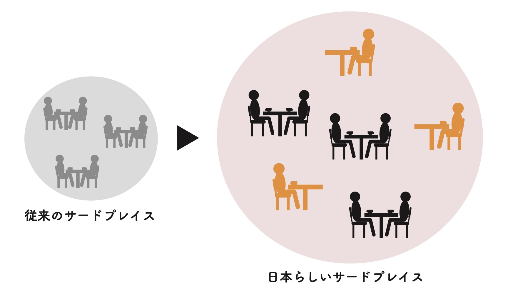
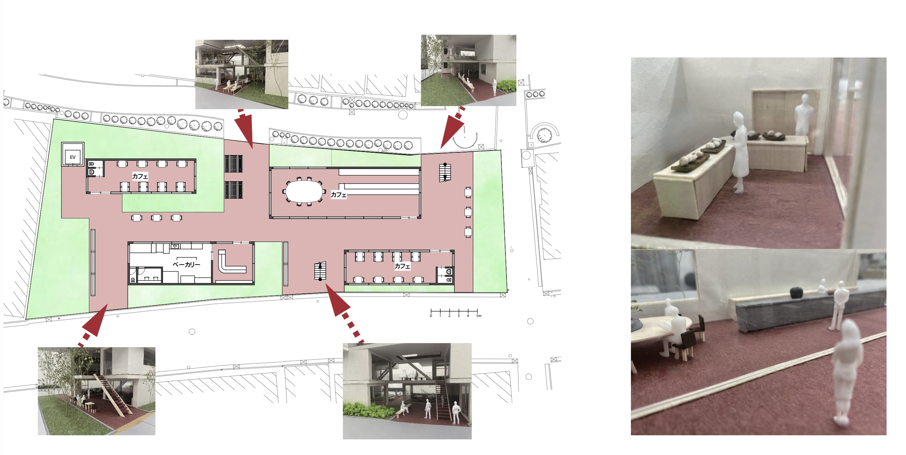
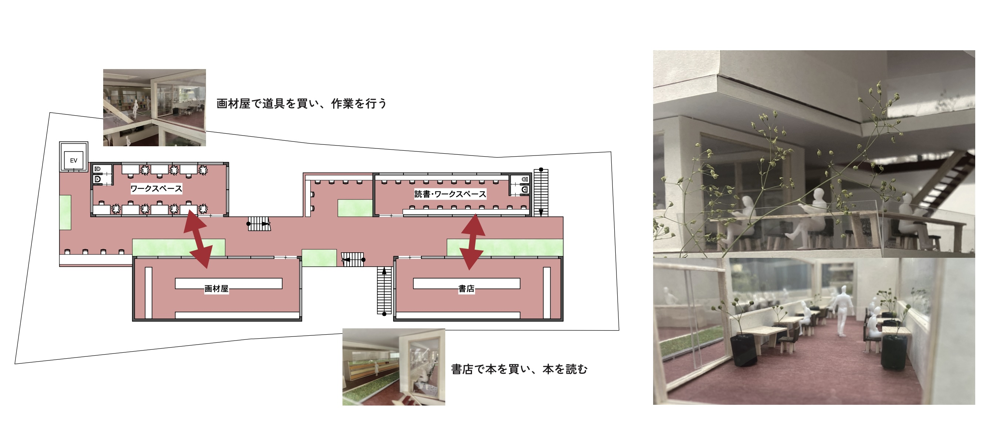
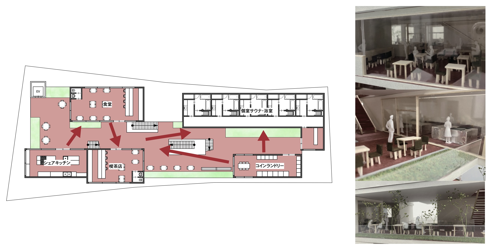
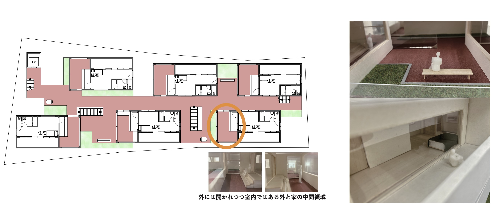
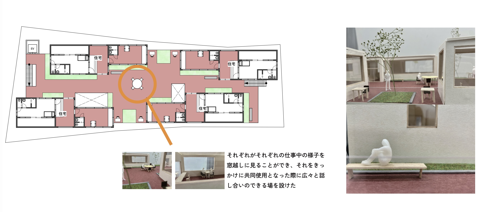
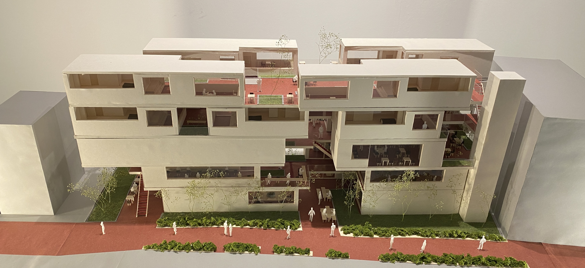
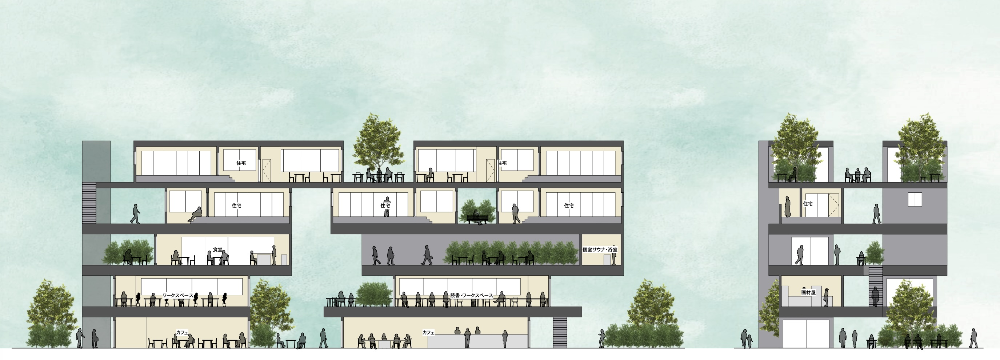

概要
サードプレイスとは、家庭や職場・学校とは別に存在する居心地のよい場所のことです。都心での生活には、仕事や人間関係、時間の流れの速さによって、 知らず知らずのうちに気を張り続けてしまう側面があると考えました。そうした日常から少し距離を取り、自分のペースに戻れる居場所として、 この敷地にサードプレイスを導入することを出発点としました。
ただし、一般的なサードプレイスは会話や交流を前提とすることが多く、神山町のように一人暮らし世帯の割合が高い地域には、 そのままでは合わないとも感じました。そこで本提案では、人と交流することだけでなく、一人でも過ごしやすい「日本らしいサードプレイス」としてそのあり方を捉え直し、 住居・商業・生活機能を重ねた複合施設として計画しました。

背景
調査から、東京都全体で約50%、渋谷区で約65%、神山町では約70%が一人暮らし世帯であることが分かりました。渋谷という都心にありながら、 個人で生活する人の割合がとても高い地域であり、「誰かと賑やかに過ごす場」だけでは受け止めきれない生活の実態があると考えました。
また、敷地の近くには緑道がありました。緑道は、人が通り抜けるだけでなく、立ち止まったり思い思いに過ごしたりできる公共空間になり得る場所です。そうした緑道の性質は、 サードプレイスに必要な要素と近いのではないかと考えました。一方で、この敷地に面する緑道は道幅も細く、実際には人が通り過ぎるだけの場所になっていました。そこで、建築の中に緑道を引き込み、 もともとあった緑道とつなげることで、双方がサードプレイスとして機能する場所を目指しました。
アプローチ
計画では、建物全体が緑道のように機能する構成を考えました。その中に住居や商業機能を配置することで、 通過する場と滞在する場が重なり合う複合施設にしています。また、階ごとに過ごし方の性格を変えることで、街との関わり方に段階をつくりました。
1階は、カフェを含む、みんなで過ごすサードプレイスとして設定しました。建物のあいだに隙間をつくり、外から中の様子が少し感じられる構成とすることで、 開放的すぎず、閉じすぎない距離感をつくり、「中に入ってみたい」と思える雰囲気を目指しました。

2階は、本屋と画材屋、それに向かい合う読書スペースや作業スペースによって、 「コミュニティの中にいながら一人で過ごせる」場として構成しました。誰かと交流しなくても、その場の空気の中に自分を置けるような階です。

3階は、飲食店、浴室付き個室サウナ、コインランドリー、シェアキッチンなどを配置し、住人と街の人のどちらも利用できる生活行為の場としました。住居スペースと商業スペースの緩衝材であると同時に、 日常的な行為を通して街と住人がゆるやかに交わる中間層として機能しています。

4階の住居は一人暮らし専用とし、玄関やベランダを縁側のような中間領域として扱いました。室内でありながら外に開かれた場所を挿入することで、 住居から街や緑道への接続を緩やかにし、一人で過ごすことと街に出ていくことのあいだに自然な移行をつくっています。

5階はSOHOを備えた住居として計画しました。ワークスペースを小さなオフィスとして用いることもでき、同じ階で仕事をする人同士が窓越しに互いの存在を感じ、 必要に応じて共同利用や会話につながるような関係性を想定しています。

模型と断面図

